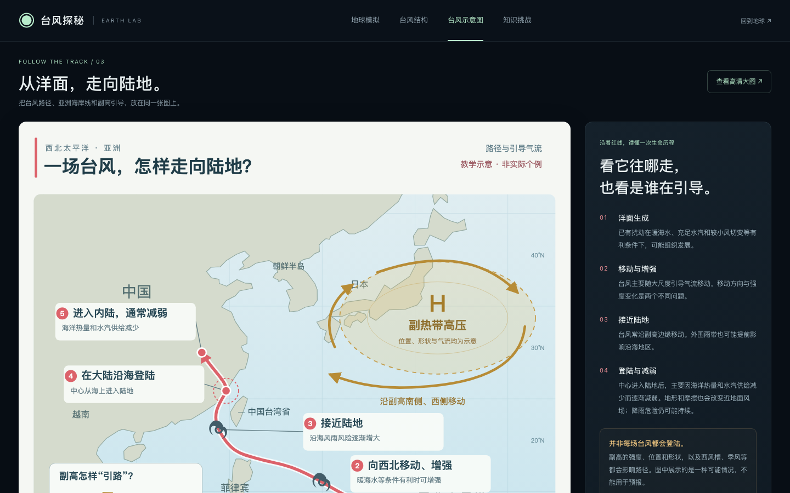

成果展示
基金结题、实验室主页、论文配套。审稿人点开就能自己跑一遍，比十页补充材料有效。
基金结题、实验室主页、论文配套。审稿人点开就能自己跑一遍，比十页补充材料有效。
课堂演示、暑期学校、培训营。学生自己动手调参数，比看老师拖进度条记得住。
博物馆展陈、会议招展、公众开放日。一个能玩的页面，比一块展板留得住人。
一个可以直接在浏览器里玩的中文台风科普网站。默认载入杜苏芮（2023）的真实起点，用天气场算出绿色路径，和独立的金色最佳路径对照；副高显示实际 500 hPa 等高线，随历史天气变化。
也可以自己选海面起点、摆副高、调环境条件，看台风怎么走。用真实数据算，不向缺测的未来外推。

你告诉我们这个过程怎么运作、哪些变量关键。一次一两小时的讨论就够。
哪些能调、调了会怎样、默认视角是什么。先出低保真原型，确认再往下做。
观测、再分析或者模式输出。能实时算的实时算，不能的预先算好。
部署、域名、性能优化。后续要改机制或换案例，按次迭代。
你提供，或者我们帮你找公开数据集。观测、再分析（ERA5、JMA）、模式输出都能用。涉及未发表数据时签保密约定。
看数据量。轻量的可以纯前端算，静态托管就行；重的（比如实时跑模式）需要后端，我们会给部署方案。
一个单机制、单案例的教具类页面通常按周计；要接大数据或者多案例联动，按月计。
可以。中英双语或者纯英文都行，取决于受众。
能。代码和数据都在你这边，我们按次迭代；也可以只交付，后续你们自己维护。